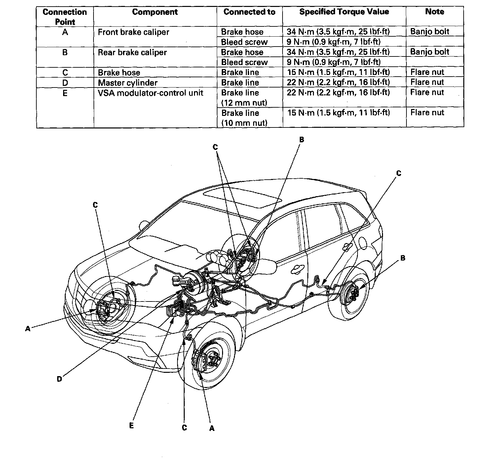

Brake Hose/Line: Testing and Inspection
Brake Hose and Line Inspection1. Inspect the brake hoses for damage, deterioration, leaks, interference, and twisting.
2. Check the brake lines for damage, rusting, and leaks. Also check for bent brake lines.
3. Check for leaks at hose and line joints and connections, and retighten if necessary.
4. Check the master cylinder and the VSA modulator-control unit for damage and leaks.
